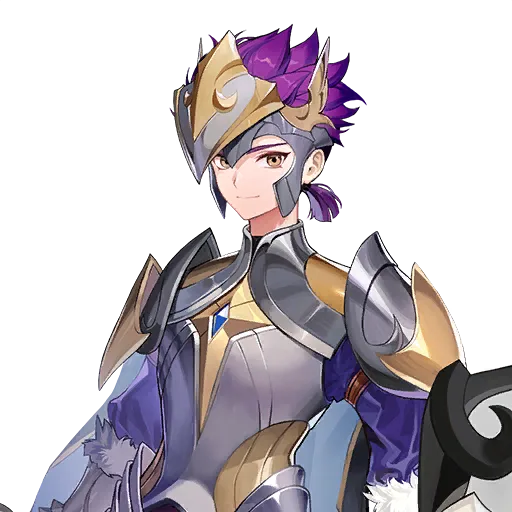
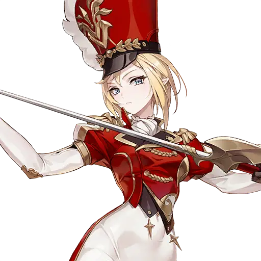

Arena —
đội nào leo hạng nào
Arena có nhiều loại đội: đội F2P cho người mới leo những hạng đầu, và đội nâng cao cho hạng cao. Tất cả đều dùng khung Defense 4-1, trừ đội Magic dùng Balanced 3-2.
🆓 Đội F2P — leo hạng đầu không cần Summon
Đội này toàn Hero miễn phí nhận được từ đầu game, hợp để leo những hạng Arena đầu mà không cần Summon.
| Hàng trước | Hàng sau |
|---|---|
| Ace — DPS Evan — Tank Rachel — DPS hỗ trợ Ariel — Support | Karin — Hồi sinh |


Cân bằng giữa sống sót, hồi máu và sát thương: Evan Tank, Karin hồi sinh ở hàng sau, Rachel vừa gây sát thương vừa giảm DEF địch, Ace và Ariel lo phần sát thương và hỗ trợ.
🪄 Đội Magic — trận hình Balanced (3 trước – 2 sau)
| Hàng trước | Hàng sau |
|---|---|
| Melia hoặc O'Mok — Tank / CC Immunity Hayeon hoặc Skuld — Support Freyja — DPS / Buff Removal | Reginleif hoặc Yeonhee — Sub-DPS Silvesta hoặc Yoongun — DPS |
Đội Magic là đội duy nhất trong các đội Arena dùng trận hình Balanced 3-2 thay vì Defense 4-1. Đây là đội nâng cao, cần Hero đã đầu tư. Pet khuyên dùng (chọn 1): Yeonji, Pike, Note.
⚔️ Đội Physical — trận hình Defense (4 trước – 1 sau)
| Hàng trước | Hàng sau |
|---|---|
| Randgrid hoặc Hayeon — Tank / CC Immunity / Support Lu Bu — Debuff / CC Karl Heron hoặc Kagura — CC / Buffer Orkah, Colt hoặc Teo — DPS / Buff Duration Reduction | Kyle hoặc Dellons — DPS |
Lu Bu trong đội Arena đứng hàng trước (Debuff/CC), không phải hàng sau. Đội Physical cần 3 Hero hệ Attack trở lên để mở khóa nội tại Blessing của Lu Bu. Pet khuyên dùng (chọn 1): Eiren, Sherry.
🛡️ Đội Universal — trận hình Defense (4 trước – 1 sau)
| Hàng trước | Hàng sau |
|---|---|
| Alice hoặc Aris — Support Radgrid hoặc Hayeon — Tank / Support Rudy — Tank / Link Clemyth — Healer / Support | Pallanus — DPS |
Đội Universal là đội meta, dùng toàn Hero nâng cao. Rudy trong đội này đứng hàng trước cùng đồng đội để cả đội nhận hiệu ứng giảm sát thương của Rudy. Pet khuyên dùng (chọn 1): Pike, Karam, Paragon.
Khi đã có thêm Hero Arena mạnh hơn (như Teo, Lu Bu, Kyle, Dellons) thì thay dần từng vị trí của đội F2P — đội hình vẫn giữ khung Defense 4-1.
Cùng khám phá Seven Knights Re:Birth
Theo dõi fanpage để cập nhật thêm các hướng dẫn dành cho cộng đồng.